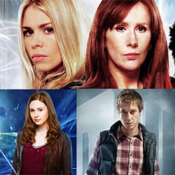

|
|||
The CompanionsIn the long-running BBC television science fiction programme Doctor Who and related works, the term "companion" refers to a character who travels with, or shares the adventures of the Doctor. In most Doctor Who stories, the primary companion acts as an audience surrogate. He or she provides the lens through which the viewer is introduced to the series. The companion character often furthers the story by asking questions and getting into trouble, or by helping, rescuing or challenging the Doctor. This designation is applied to a character by the show's producers, and appears in the BBC's promotional material and off-screen fictional terminology. Until the modern revival of the series in 2005, the term was rarely used on-screen. The Doctor also refers to the show's other leads as his "friends" or "assistants"; the British press have also used the latter term. |